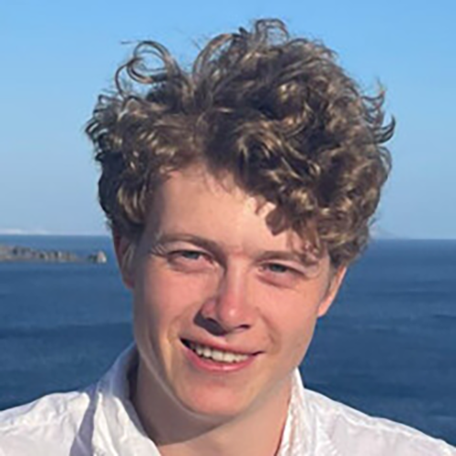

About Me
Contact me
My Projects
Artstation

Profile
As a 3D artist, I contributed to diverse projects, like Games, Rigging,
Animation Tools, MoCap, VR/AR Platforms combining creativity with
coding, debugging, and procedural systems to support artists
and enhance workflows. These experiences strengthened my
technical problem-solving skills and sparked a growing passion for
programming. This shift in focus led me to pursue a career in IT, where
I hope to apply and refine my technical expertise and problem-solving
abilities in a dedicated role
Employment History
3D Generalist at Freelance
November 2022
-
Worked on diverse 3D projects, focusing on creating systems to
support assets and animations.
-
Assisted with debugging to identify and resolve technical issues
efficiently.
-
Implemented procedural solutions to streamline workflows and
improve pipeline efficiency.
-
Gained valuable problem-solving skills and strengthened
programming expertise.
Graphic Designer at Gravure 85
January 2020 — January 2023
-
Developing Attractive and effective visual designs that were
respectful to their subjects and history.
-
Refining and Optimizing their website by restoring links, adding
and adjusting keywords, and more.
Diving Instructor at Dive2Gether, Plakias, Crete
June 2023 — November 2024
-
Gained experience working with international teams and
communicating across language barriers.
-
Stayed calm, respectful, and engaging to ensure effective
instruction and guidance
Internships
Intern 3D Generalist at Grey-Games, Hilversum
January 2021 — December 2021
-
Worked on diverse projects as a 3D Generalist, including the
development of an indie title, VR platforms and more.
Education
Graphic Designer, Grafish Lyceum Utrecht
July 2018 — June 2022
Skills
Tech Art
3D Modeling/ Animation
Game Development
Coding Languages
C#, C++ _Intermediate
Python, VEX _Beginner
Programs
Github
Maya
Zbrush
Substance Painter
Substance Designer
Unreal Engine
Unity
Blender
Houdini
Marvelous Designer
Adobe Photoshop
Adobe Illustrator